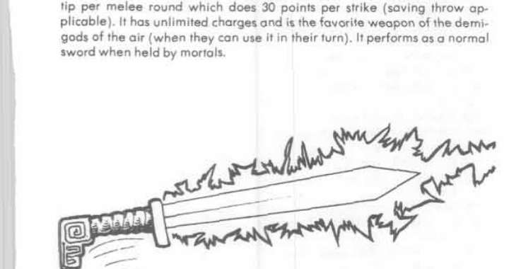
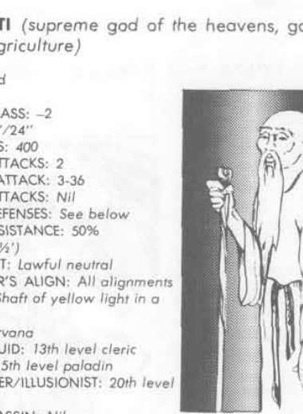

上帝（天界至高神） · Shang-Ti
Shang-Ti 是天空与农业之神、天界官僚体系的最高裁判。守序中立强大神，AC −2，400 点生命值，魔法抗性 50%，位于 Nirvana；13 级牧师、15 级圣武士、20 级魔法师／幻术师、15 级吟游诗人。他常以白须老人形象在人间旅行，能漂浮在空中观察城市与城镇；投向他的实体武器会反弹回攻击者。
他以黄色光束作武器，每击造成 3–36 点伤害，射程等同视线；作为天空与农业之神，他能立即召来或驱散任何天气。所有天界神祇最终都向他报告，他的命令对诸神与女神均具法律效力，并由他裁决神祇之间的争端。

